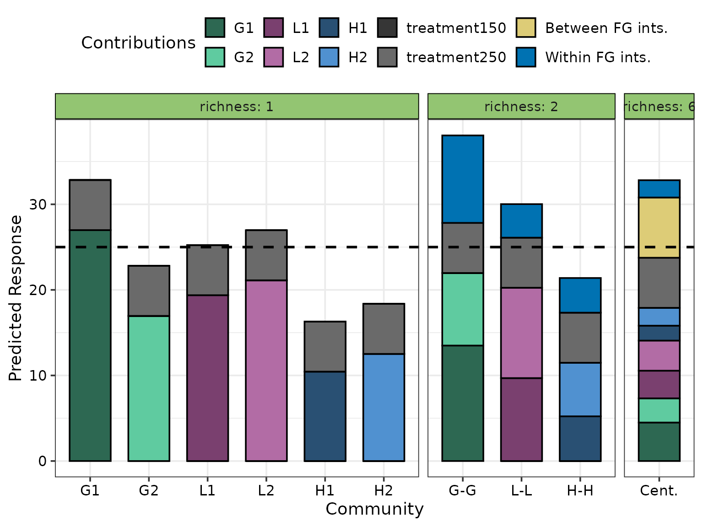
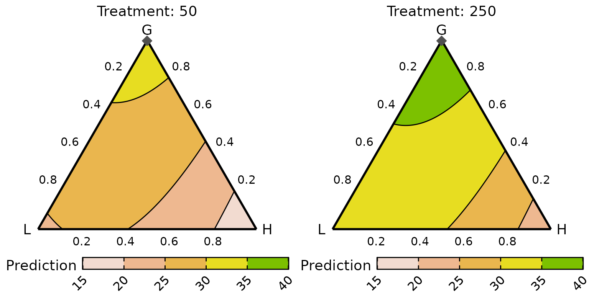
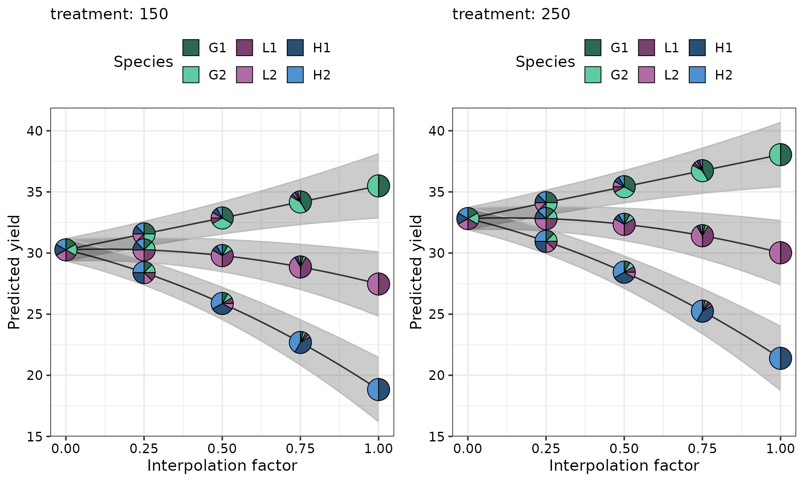

Using DImodelsVis with regression models not fit using the DImodels package
DImodelsVis-with-complex-models.RmdDImodelsVis is very convenient to use with regression
models fit using the DImodels
or DImodelsMulti
R packages. However, there may be situations when users need to work
with highly customised and complex models that are not possible to fit
using either DImodels or DImodelsMulti.
Additionally, users may also desire finer control over the visualisation
pipeline and seek to modify both, the plot appearance as well as the
underlying data. To accommodate these needs, each visualisation function
in DImodelsVis is paired with a separate data preparation
(suffixed by _data) and plotting (suffixed by
_plot) function. This separation provides great
flexibility, as the data preparation functions allow users to create,
modify, or extend the prepared data before visualising it, while the
plotting functions enable customisation of the plot aesthetics
independently. This document provides examples demonstrating how users
can leverage this separation to create visualisations in a modular
manner and derive insights from any regression model with compositional
predictors using DImodelsVis. The examples shown here are
created with a regression model fit using glm but the exact
same principles would apply for creating visualisations using any other
regression modelling tool kit.
Loading necessary packages
The following R packages will be used for data processing and generating visualisations.
Load data
We use the sim4 data (henceforth referred as
sim4) from the DImodels
R package. The sim4 data is simulated to represent patterns
commonly observed in BEF studies. The proportions of six species
(labelled p1 to p6) were manipulated to create 33 communities, each
containing one to six species. Additionally, a treatment covariate
representing three nitrogen fertilisation levels (50,
150, and 250) in kg/ha/yr was also added with
every community replicated at each treatment level. The species are
categorised into functional groups based on their ecological roles:
p1 and p2 are classified as grasses,
p3 and p4 as legumes, and p5 and
p6 as herbs. The response variable of interest is the
annual aboveground dry-matter yield (in tonnes/ha). The first few rows
of the data are printed below.
data("sim4")
head(sim4, 8)
#> richness treatment p1 p2 p3 p4 p5 p6 response
#> 1 1 50 1 0 0 0 0 0 26.325
#> 2 1 50 1 0 0 0 0 0 29.083
#> 3 1 50 1 0 0 0 0 0 27.581
#> 4 1 50 0 1 0 0 0 0 17.391
#> 5 1 50 0 1 0 0 0 0 15.678
#> 6 1 50 0 1 0 0 0 0 14.283
#> 7 1 50 0 0 1 0 0 0 16.317
#> 8 1 50 0 0 1 0 0 0 19.553Model fitting
We relabel the species columns in the data such that the two grasses
are G1 and G2, legumes are L1 and
L2, with herbs being H1 and H2.
Furthermore we also add the within and between functional group
interaction terms to our data.
model_data <- sim4 %>%
# Rename species columns
rename(G1 = p1, G2 = p2, L1 = p3,
L2 = p4, H1 = p5, H2 = p6) %>%
# Total functional group proportion
mutate(G = G1 + G2,
L = L1 + L2,
H = H1 + H2) %>%
# Add additional interaction columns to data
mutate(wfg_G = G1*G2, wfg_L = L1*L2, wfg_H = H1*H2,
bfg_GL = (G1 + G2) * (L1 + L2),
bfg_GH = (G1 + G2) * (H1 + H2),
bfg_LH = (L1 + L2) * (H1 + H2)) %>%
# Add dummy variables for treatment
mutate(treatment50 = ifelse(treatment == 50, 1, 0),
treatment150 = ifelse(treatment == 150, 1, 0),
treatment250 = ifelse(treatment == 250, 1, 0)) %>%
# Rearrange columns
select(-response, everything(), response)
head(model_data, 8)
#> richness treatment G1 G2 L1 L2 H1 H2 G L H wfg_G wfg_L wfg_H bfg_GL bfg_GH
#> 1 1 50 1 0 0 0 0 0 1 0 0 0 0 0 0 0
#> 2 1 50 1 0 0 0 0 0 1 0 0 0 0 0 0 0
#> 3 1 50 1 0 0 0 0 0 1 0 0 0 0 0 0 0
#> 4 1 50 0 1 0 0 0 0 1 0 0 0 0 0 0 0
#> 5 1 50 0 1 0 0 0 0 1 0 0 0 0 0 0 0
#> 6 1 50 0 1 0 0 0 0 1 0 0 0 0 0 0 0
#> 7 1 50 0 0 1 0 0 0 0 1 0 0 0 0 0 0
#> 8 1 50 0 0 1 0 0 0 0 1 0 0 0 0 0 0
#> bfg_LH treatment50 treatment150 treatment250 response
#> 1 0 1 0 0 26.325
#> 2 0 1 0 0 29.083
#> 3 0 1 0 0 27.581
#> 4 0 1 0 0 17.391
#> 5 0 1 0 0 15.678
#> 6 0 1 0 0 14.283
#> 7 0 1 0 0 16.317
#> 8 0 1 0 0 19.553Fitting the model
A regression model is fit to model_data using the
glm() function with the model equation as shown below:
where is the response (annual biomass yield), , , , , and are the sown proportions and , , , , , and are the identity effects of the six species G1, G2, L1, L2, H1, and H2 respectively.The functional group proportions of grasses, legumes, and herbs is represented by (), (), and (), respectively. The between functional group interactions are captured by , , and with , , and capturing the within-functional group interaction for grasses, legumes, and herbs, respectively. The additional effects of fertiliser treatment are captured by and with and being dummy variables for a specific level of fertiliser treatment. Finally, the error term is assumed to be normal with mean and variance .
The R code for fitting this model using
glm() along with the model output is presented below.
cust_model <- glm(response ~ 0 + G1 + G2 + L1 + L2 + H1 + H2 +
bfg_GL + bfg_GH + bfg_LH +
wfg_G + wfg_L + wfg_H +
treatment150 + treatment250,
data = model_data)The model coefficients are as follows.
summary(cust_model)
#>
#> Call:
#> glm(formula = response ~ 0 + G1 + G2 + L1 + L2 + H1 + H2 + bfg_GL +
#> bfg_GH + bfg_LH + wfg_G + wfg_L + wfg_H + treatment150 +
#> treatment250, data = model_data)
#>
#> Coefficients:
#> Estimate Std. Error t value Pr(>|t|)
#> G1 26.9878 0.7698 35.057 < 2e-16 ***
#> G2 16.9599 0.7698 22.031 < 2e-16 ***
#> L1 19.3803 0.7698 25.175 < 2e-16 ***
#> L2 21.1189 0.7698 27.434 < 2e-16 ***
#> H1 10.4473 0.7698 13.571 < 2e-16 ***
#> H2 12.5173 0.7698 16.260 < 2e-16 ***
#> bfg_GL 16.1743 2.5691 6.296 4.57e-09 ***
#> bfg_GH 21.1347 2.5691 8.227 1.96e-13 ***
#> bfg_LH 26.0550 2.5691 10.142 < 2e-16 ***
#> wfg_G 40.8789 5.5387 7.381 1.82e-11 ***
#> wfg_L 15.6723 5.5387 2.830 0.00542 **
#> wfg_H 16.2103 5.5387 2.927 0.00406 **
#> treatment150 3.2985 0.4880 6.759 4.51e-10 ***
#> treatment250 5.8536 0.4880 11.995 < 2e-16 ***
#> ---
#> Signif. codes: 0 '***' 0.001 '**' 0.01 '*' 0.05 '.' 0.1 ' ' 1
#>
#> (Dispersion parameter for gaussian family taken to be 5.596318)
#>
#> Null deviance: 93567.57 on 141 degrees of freedom
#> Residual deviance: 710.73 on 127 degrees of freedom
#> AIC: 658.21
#>
#> Number of Fisher Scoring iterations: 2Note: The intercept has been dropped from this model due to the compositional nature of the predictors in the model.
We proceed with this model and create visualisations for interpreting the results.
Visualisations
The model object stored in cust_model will be used for
creating all the visualisations shown in this section. We will follow a
modular plotting workflow where the data needed for each visualisation
will be created first and modified as per our needs and then passed on
to the respective plotting function to create the visualisation.
We first define a common set of variables which will be used across the board for ease of use
# Names of the compositional predictors (i.e., species) in the model
species <- c("G1", "G2", "L1", "L2", "H1", "H2")
# Functional groupings of the species
FG <- c("G", "G", "L", "L", "H", "H")
# Colours to be used for the six compostional variables (species) in plots
var_cols <- get_colours(vars = species, FG = FG)Model diagnostics plot
Let’s first examine the model diagnostics plots for our fitted model to ensure there are no severe problems with the model assumptions.
The data needed for creating the diagnostics plot is prepared using
the model_diagnostics_data() function. The primary
difference here (and in all other functions) compared to using the
wrapper functions designed for use with DImodels objects is
that the names of the compositional predictors should to be specified in
the prop parameter.
diag_data <- model_diagnostics_data(
model = cust_model, # Regression model object
prop = species) # Names of the compositional predictorsThe model_diagnostics_data() function returns the
original data fitted to the model with additional columns containing
diagnostic information for each observation. The returned data looks as
follows.
head(diag_data, 8)
#> response G1 G2 L1 L2 H1 H2 bfg_GL bfg_GH bfg_LH wfg_G wfg_L wfg_H
#> 1 26.325 1 0 0 0 0 0 0 0 0 0 0 0
#> 2 29.083 1 0 0 0 0 0 0 0 0 0 0 0
#> 3 27.581 1 0 0 0 0 0 0 0 0 0 0 0
#> 4 17.391 0 1 0 0 0 0 0 0 0 0 0 0
#> 5 15.678 0 1 0 0 0 0 0 0 0 0 0 0
#> 6 14.283 0 1 0 0 0 0 0 0 0 0 0 0
#> 7 16.317 0 0 1 0 0 0 0 0 0 0 0 0
#> 8 19.553 0 0 1 0 0 0 0 0 0 0 0 0
#> treatment150 treatment250 .hat .sigma .cooksd .fitted .resid
#> 1 0 0 0.1058936 2.374202 7.426182e-04 26.98775 -0.6627540
#> 2 0 0 0.1058936 2.366805 7.422170e-03 26.98775 2.0952460
#> 3 0 0 0.1058936 2.374365 5.950185e-04 26.98775 0.5932460
#> 4 0 0 0.1058936 2.374675 3.142566e-04 16.95987 0.4311335
#> 5 0 0 0.1058936 2.371950 2.778091e-03 16.95987 -1.2818665
#> 6 0 0 0.1058936 2.361594 1.211475e-02 16.95987 -2.6768665
#> 7 0 0 0.1058936 2.357422 1.586474e-02 19.38028 -3.0632750
#> 8 0 0 0.1058936 2.374967 5.043954e-05 19.38028 0.1727250
#> .stdresid Obs Label .qq weights
#> 1 -0.29628289 1 1 -0.4016478 1
#> 2 0.93667566 2 2 1.0564117 1
#> 3 0.26520947 3 3 0.3633920 1
#> 4 0.19273739 4 4 0.2699041 1
#> 5 -0.57305593 5 5 -0.5614833 1
#> 6 -1.19668798 6 6 -1.2655513 1
#> 7 -1.36943116 7 7 -1.5523965 1
#> 8 0.07721636 8 8 0.1606864 1The data-preparation functions also add additional attributes to the
prepared data which are accessed by the plotting functions for creating
the visualisations. In this case, the primary attribute added to the
data is the names of the compositional predictors with the key
"prop" and can be accessed as follows.
attr(diag_data, "prop")
#> [1] "G1" "G2" "L1" "L2" "H1" "H2"The prepared data-frame can be updated if the user desires to add any
additional columns or modify any existing ones and then be passed to the
model_diagnostics_plot() function for creating the
visualisation as follows.
model_diagnostics_plot(
data = diag_data, # Output data-frame returned by model_diagnostics_data()
which = c(1, 2), # Only print first 2 plots to save space
pie_colours = var_cols # Colours for the pie-slices
)
#> ✔ Created all plots.
It might be desirable to reduce over-plotting by showing only the
extreme observations as pie-glyphs and rendering the remaining as
points. The only_extremes in conjunction with the
npoints argument can be used.
model_diagnostics_plot(
data = diag_data,
which = c(1, 2),
pie_colours = var_cols,
only_extremes = TRUE, # Show only extreme points as pie-glyphs
npoints = 5) # Show the five most extreme points as pie-glyphs (default is 3)
#> ✔ Created all plots.The “Residual vs Fitted” plot in the above figure indicates that the
residuals are centered around the y = 0 line and have a
relatively constant variance across the board. The “QQ-Plot” indicates
that the normality assumption doesn’t seem to violated. The observations
highlighted with pie-glyphs are primarily
containing 'H2' which indicates that the model may not be
capturing information about 'H2' very well and we might
have to investigate it further.
The figure can also be customised further if needed. For example, suppose the user wishes to overlay the “Residual vs Fitted” plot with pie-glyphs but only for those observations receiving the 250 kg nitrogen treatment. This can be achieved with the following code with the output shown below:
# Extract data for containing observations recieving 250 N treatment
data_250 <- diag_data %>%
filter(treatment250 == 1)
# We first create the diagnostic plot
diag_plot <- model_diagnostics_plot(
data = diag_data,
which = c(1), # Only show residual vs fitted plot
pie_colours = var_cols,
only_extremes = TRUE, # Show only extreme points as pie-glyphs
npoints = 0, # Show the no extreme points as pie-glyphs
)
#> ✔ Created all plots.
# Now we can use traditional ggplot machinery to modify the plot
diag_plot +
# Manually add pie-glyphs using the subsetted data from above
geom_pie_glyph(data = data_250, slices = species, colour = "black")Prediction contributions
The prediction_contributions_data() function can be
called to create the template data needed for visualising the
contributions of the various terms in the model to the predicted
response.
We first create a subset of the data for which the predictions contributions should be visualised. For this example we will visualise the six monocultures, 50-50 mixtures of the two grasses, legumes and herb along with the six-species centroid mixture receiving the 250kg nitrogen treatment. These communities can be subsetted from the data as follows
subset_data <- model_data %>%
# Filter only those observations recieving 250 N treatment
filter(treatment250 == 1) %>%
distinct(G1, G2, L1, L2, H1, H2, .keep_all = TRUE) %>%
# Filter specific communities
filter(
# Six monocultures
(G1 == 1 | G2 == 1 | L1 == 1 | L2 == 1 | H1 == 1 | H2 == 1) |
# Two species mixtures
((G1 == 0.5 & G2 == 0.5) | (L1 == 0.5 & L2 == 0.5) | (H1 == 0.5 & H2 == 0.5)) |
# Six species centroid
(near(G1, 0.16667, tol = 0.01)))
head(subset_data)
#> richness treatment G1 G2 L1 L2 H1 H2 G L H wfg_G wfg_L wfg_H bfg_GL bfg_GH
#> 1 1 250 1 0 0 0 0 0 1 0 0 0 0 0 0 0
#> 2 1 250 0 1 0 0 0 0 1 0 0 0 0 0 0 0
#> 3 1 250 0 0 1 0 0 0 0 1 0 0 0 0 0 0
#> 4 1 250 0 0 0 1 0 0 0 1 0 0 0 0 0 0
#> 5 1 250 0 0 0 0 1 0 0 0 1 0 0 0 0 0
#> 6 1 250 0 0 0 0 0 1 0 0 1 0 0 0 0 0
#> bfg_LH treatment50 treatment150 treatment250 response
#> 1 0 0 0 1 32.538
#> 2 0 0 0 1 23.644
#> 3 0 0 0 1 25.242
#> 4 0 0 0 1 24.641
#> 5 0 0 0 1 16.019
#> 6 0 0 0 1 15.449This data containing the specific commmunities of interest can be
passed to the prediction_contributions_data() function to
create the template necessary for visualising the contributions.
Note: All predictors variables from the model should be present in the data or the function would throw an error.
pred_cont_data <- prediction_contributions_data(
model = cust_model, # Model used for making predicitons
data = subset_data, # Data containing the observation for which to make prediction
# X-axis labels to be used for the bars
bar_labs = c("G1", "G2", "L1", "L2", "H1", "H2", "G-G", "L-L", "H-H", "Cent.")
)
#> ✔ Finished data preparation.
head(pred_cont_data)
#> # A tibble: 6 × 14
#> .x_labs .Community richness treatment G L H treatment50 response
#> <chr> <fct> <int> <dbl> <dbl> <dbl> <dbl> <dbl> <dbl>
#> 1 G1 Community 1 1 250 1 0 0 0 32.5
#> 2 G1 Community 1 1 250 1 0 0 0 32.5
#> 3 G1 Community 1 1 250 1 0 0 0 32.5
#> 4 G1 Community 1 1 250 1 0 0 0 32.5
#> 5 G1 Community 1 1 250 1 0 0 0 32.5
#> 6 G1 Community 1 1 250 1 0 0 0 32.5
#> # ℹ 5 more variables: .Pred <dbl>, .Lower <dbl>, .Upper <dbl>,
#> # .Contributions <chr>, .Value <dbl>The prepared data now contains additional columns
(.Contributions and .Value) which describe the
contributions of each model term to the response for each community. The
predicted response (.Pred) along with the uncertainty (95%
by default) around it is also present (.Upper and
.Lower). Finally, there is additional information about the
grouping and labelling for each community (.Community and
.x_labs).
Note: If the data passed to this function had rows and the model had coefficients, the resultant data will have rows.
If the model was not fit in R, or for some reason if the user doesn’t have access to the fitted model object, it is also possible to obtain the same data by using the model coefficients.
Suppose we only had access to the following coefficients.
(mod_coeffs <- coef(cust_model))
#> G1 G2 L1 L2 H1 H2
#> 26.987754 16.959867 19.380275 21.118863 10.447271 12.517346
#> bfg_GL bfg_GH bfg_LH wfg_G wfg_L wfg_H
#> 16.174287 21.134709 26.054987 40.878915 15.672343 16.210285
#> treatment150 treatment250
#> 3.298532 5.853617The same data as before could be generated as follows. We specify an
additional argument coeff_cols which gives the names of
columns corresponding to the coefficients.
pred_cont_data <- prediction_contributions_data(
coefficients = mod_coeffs, # Model coeffecients
coeff_cols = names(mod_coeffs), # Column names corresponding to the coefficients
data = subset_data, # Data containing the observation for which to make prediction
# X-axis labels to be used for the bars
bar_labs = c("G1", "G2", "L1", "L2", "H1", "H2", "G-G", "L-L", "H-H", "Cent.")
)
#> ✔ Finished data preparation.
head(pred_cont_data)
#> # A tibble: 6 × 14
#> .x_labs .Community richness treatment G L H treatment50 response
#> <chr> <fct> <int> <dbl> <dbl> <dbl> <dbl> <dbl> <dbl>
#> 1 G1 Community 1 1 250 1 0 0 0 32.5
#> 2 G1 Community 1 1 250 1 0 0 0 32.5
#> 3 G1 Community 1 1 250 1 0 0 0 32.5
#> 4 G1 Community 1 1 250 1 0 0 0 32.5
#> 5 G1 Community 1 1 250 1 0 0 0 32.5
#> 6 G1 Community 1 1 250 1 0 0 0 32.5
#> # ℹ 5 more variables: .Pred <dbl>, .Lower <dbl>, .Upper <dbl>,
#> # .Contributions <chr>, .Value <dbl>Note: When using model coefficients for generating the data,
the uncertainty information around the prediction won’t be available by
default. However, this information can be obtained as well if the user
passes the variance-covariance matrix of the coefficients in the
vcov argument.
Using the prepared data, the prediction-contributions plot can be
generated using the prediction_contributions_plot()
function. By default, only the data argument is needed, however, it
often helps to manually specify the colours for each contribution via
the 'colours' argument to make the plot more
informative.
prediction_contributions_plot(
data = pred_cont_data, # Output data from prediction_contributions_data()
colours = c(# Colours for the six species contributions
var_cols,
# Colours for between FG interactions
get_shades("#DDCC77", shades = 3)[[1]],
# Colours for within FG interactions
get_shades("#D55E00", shades = 3)[[1]],
# Colours for nitrogen treatment
get_shades("#505050", shades = 2)[[1]]))
#> ✔ Created plot.The above figure shows the G1 monoculture performs best among monocultures and has comparable performance to the six-species centroid mixture. Additionally, the within grass interaction (“wfg_G”) is stronger than the within legume (“wfg_L”) and within herb (“wfg_H”) interactions. However, the between FG interactions (“bfg_*“) contribute more towards the predicted response compared to within FG interactions.
For situations when there are too many predictors in the model, it is
also possible to group similar terms so that their total contribution is
shown using a single segment on the bar by using the groups
argument in the prediction_contributions_data() function.
The output visualisation with grouped FG interaction terms is shown
below.
pred_cont_data_grouped <- prediction_contributions_data(
model = cust_model,
data = subset_data,
# We group the three between and within FG interactions into single terms
groups = list("Between FG ints." = c("bfg_GL", "bfg_GH", "bfg_LH"),
"Within FG ints." = c("wfg_G", "wfg_L", "wfg_H")),
# X-axis labels to be used for the bars
bar_labs = c("G1", "G2", "L1", "L2", "H1", "H2", "G-G", "L-L", "H-H", "Cent.")
)
#> ✔ Finished data preparation.
# Notice the .Contributions column
head(pred_cont_data_grouped, 10)
#> # A tibble: 10 × 20
#> .x_labs .Community richness treatment G L H wfg_G wfg_L wfg_H
#> <chr> <fct> <int> <dbl> <dbl> <dbl> <dbl> <dbl> <dbl> <dbl>
#> 1 G1 Community 1 1 250 1 0 0 0 0 0
#> 2 G1 Community 1 1 250 1 0 0 0 0 0
#> 3 G1 Community 1 1 250 1 0 0 0 0 0
#> 4 G1 Community 1 1 250 1 0 0 0 0 0
#> 5 G1 Community 1 1 250 1 0 0 0 0 0
#> 6 G1 Community 1 1 250 1 0 0 0 0 0
#> 7 G1 Community 1 1 250 1 0 0 0 0 0
#> 8 G1 Community 1 1 250 1 0 0 0 0 0
#> 9 G1 Community 1 1 250 1 0 0 0 0 0
#> 10 G1 Community 1 1 250 1 0 0 0 0 0
#> # ℹ 10 more variables: bfg_GL <dbl>, bfg_GH <dbl>, bfg_LH <dbl>,
#> # treatment50 <dbl>, response <dbl>, .Pred <dbl>, .Lower <dbl>, .Upper <dbl>,
#> # .Contributions <chr>, .Value <dbl>Notice how the .Contributions column now has the
combined between and within FG interactions as opposed to those at the
individual functional group level.
grouped_cont_plot <- prediction_contributions_plot(
data = pred_cont_data_grouped, # Output data from prediction_contributions_data()
colours = c(# Colours for the six species contributions
var_cols,
# Colours for nitrogen treatment
get_shades("#505050", shades = 2)[[1]],
# Colours for between FG interactions
"#DDCC77",
# Colours for within FG interactions
"#0072B2"))
#> ✔ Created plot.
grouped_cont_plotFinally, the output visualisation can also be customised with additional annotations if desired. For example, if the user wishes to overlay a reference line on the plot for comparisons purposes and separate by bars by species richness, they can do so using as follows. The output visualisation with these aesthetic changes is shown below
grouped_cont_plot +
# Add dashed reference line
geom_hline(yintercept = 25, linewidth = 1,
colour = "black", linetype = "dashed") +
facet_grid(~richness, labeller = label_both,
space = "free_x", scale = "free_x")
Conditional ternary diagrams
The conditional_ternary_data() creates function creates
a template data.frame which can be passed to
conditional_ternary_plot() for creating conditional ternary
diagrams. For simple models, calling
conditional_ternary_data() would also add the predicted
response across the ternary surface. However, for complex models with
additional non-compositional predictors, by default the function would
try to make predictions for the most reasonable values for these
non-compositional predictors (base level for categorical and median
value for continuous) but that won’t always be desirable. So users have
the option to generate a template data frame without predictions by
setting prediction = FALSE. This template can then be
modified to include any additional variables required for predictions
before being passed to the appropriate plotting function for
visualisation.
The following code shows an example of creating such a template where
we fix G2 and L2 at specific values and allow
G1, L1 and H1 to vary between 0
and
.
Note: Since H2 is not specified here, it is
assumed to be zero.
cond_tern_template <- conditional_ternary_data(
prop = species, # Names of the compositional predictors
tern_vars = c("G1", "L1", "H1"), # Names for the three predictors to show in the ternary
# The values at which to fix the remaining predictors
# Any compositional predictors not specified here (e.g. H2) would be assumed to be 0
conditional = data.frame("G2" = c(0.2, 0.1),
"L2" = c(0.1, 0.3)),
# Do not add predictions
prediction = FALSE)
#> ✔ Finished data preparation.
head(cond_tern_template)
#> G1 L1 H1 .x .y G2 L2 H2 .Sp .Value
#> 1 0 0.7000000 0.000000000 0.000000000 0 0.2 0.1 0 G2, L2 0.2, 0.1
#> 2 0 0.6988314 0.001168614 0.001669449 0 0.2 0.1 0 G2, L2 0.2, 0.1
#> 3 0 0.6976628 0.002337229 0.003338898 0 0.2 0.1 0 G2, L2 0.2, 0.1
#> 4 0 0.6964942 0.003505843 0.005008347 0 0.2 0.1 0 G2, L2 0.2, 0.1
#> 5 0 0.6953255 0.004674457 0.006677796 0 0.2 0.1 0 G2, L2 0.2, 0.1
#> 6 0 0.6941569 0.005843072 0.008347245 0 0.2 0.1 0 G2, L2 0.2, 0.1
#> .Facet
#> 1 G2 = 0.2; L2 = 0.1
#> 2 G2 = 0.2; L2 = 0.1
#> 3 G2 = 0.2; L2 = 0.1
#> 4 G2 = 0.2; L2 = 0.1
#> 5 G2 = 0.2; L2 = 0.1
#> 6 G2 = 0.2; L2 = 0.1The template has all the necessary columns along with additional attributes needed for creating conditional ternary diagrams.
attributes(cond_tern_template)[-2]
#> $names
#> [1] "G1" "L1" "H1" ".x" ".y" "G2" "L2" "H2"
#> [9] ".Sp" ".Value" ".Facet"
#>
#> $class
#> [1] "data.frame"
#>
#> $prop
#> [1] "G1" "G2" "L1" "L2" "H1" "H2"
#>
#> $tern_vars
#> [1] "G1" "L1" "H1"
#>
#> $x_proj
#> [1] ".x"
#>
#> $y_proj
#> [1] ".y"The necessary additional columns needed for making the predictions
can be added using a dplyr pipeline or base R.
Note: If any specific transformation were made to any columns in the raw data before model fitting, the same transformation should be also be added to this template to ensure predictions are accurate.
We create datasets for making two ternaries, one for communities at 150 kg nitrogen treatment and other at 250 kg nitrogen treatment. The between- and within- functional group interaction terms are also added to the data.
Predicting response for communities at 150 kg nitrogen treatment
cond_tern_template150 <- cond_tern_template %>%
# Add values for the interaction columns to data
mutate(wfg_G = G1*G2, wfg_L = L1*L2, wfg_H = H1*H2,
bfg_GL = (G1 + G2) * (L1 + L2),
bfg_GH = (G1 + G2) * (H1 + H2),
bfg_LH = (L1 + L2) * (H1 + H2)) %>%
# We first want ternary for treatment150
mutate(treatment150 = 1, treatment250 = 0)
head(cond_tern_template150)
#> G1 L1 H1 .x .y G2 L2 H2 .Sp .Value
#> 1 0 0.7000000 0.000000000 0.000000000 0 0.2 0.1 0 G2, L2 0.2, 0.1
#> 2 0 0.6988314 0.001168614 0.001669449 0 0.2 0.1 0 G2, L2 0.2, 0.1
#> 3 0 0.6976628 0.002337229 0.003338898 0 0.2 0.1 0 G2, L2 0.2, 0.1
#> 4 0 0.6964942 0.003505843 0.005008347 0 0.2 0.1 0 G2, L2 0.2, 0.1
#> 5 0 0.6953255 0.004674457 0.006677796 0 0.2 0.1 0 G2, L2 0.2, 0.1
#> 6 0 0.6941569 0.005843072 0.008347245 0 0.2 0.1 0 G2, L2 0.2, 0.1
#> .Facet wfg_G wfg_L wfg_H bfg_GL bfg_GH bfg_LH
#> 1 G2 = 0.2; L2 = 0.1 0 0.07000000 0 0.1600000 0.0000000000 0.0000000000
#> 2 G2 = 0.2; L2 = 0.1 0 0.06988314 0 0.1597663 0.0002337229 0.0009335258
#> 3 G2 = 0.2; L2 = 0.1 0 0.06976628 0 0.1595326 0.0004674457 0.0018643203
#> 4 G2 = 0.2; L2 = 0.1 0 0.06964942 0 0.1592988 0.0007011686 0.0027923835
#> 5 G2 = 0.2; L2 = 0.1 0 0.06953255 0 0.1590651 0.0009348915 0.0037177154
#> 6 G2 = 0.2; L2 = 0.1 0 0.06941569 0 0.1588314 0.0011686144 0.0046403159
#> treatment150 treatment250
#> 1 1 0
#> 2 1 0
#> 3 1 0
#> 4 1 0
#> 5 1 0
#> 6 1 0Predicting response for communities at 150 kg nitrogen treatment
cond_tern_template250 <- cond_tern_template %>%
# Add additional interaction columns to data
mutate(wfg_G = G1*G2, wfg_L = L1*L2, wfg_H = H1*H2,
bfg_GL = (G1 + G2) * (L1 + L2),
bfg_GH = (G1 + G2) * (H1 + H2),
bfg_LH = (L1 + L2) * (H1 + H2)) %>%
# This will create ternary for treatment250
mutate(treatment150 = 0, treatment250 = 1)
head(cond_tern_template250)
#> G1 L1 H1 .x .y G2 L2 H2 .Sp .Value
#> 1 0 0.7000000 0.000000000 0.000000000 0 0.2 0.1 0 G2, L2 0.2, 0.1
#> 2 0 0.6988314 0.001168614 0.001669449 0 0.2 0.1 0 G2, L2 0.2, 0.1
#> 3 0 0.6976628 0.002337229 0.003338898 0 0.2 0.1 0 G2, L2 0.2, 0.1
#> 4 0 0.6964942 0.003505843 0.005008347 0 0.2 0.1 0 G2, L2 0.2, 0.1
#> 5 0 0.6953255 0.004674457 0.006677796 0 0.2 0.1 0 G2, L2 0.2, 0.1
#> 6 0 0.6941569 0.005843072 0.008347245 0 0.2 0.1 0 G2, L2 0.2, 0.1
#> .Facet wfg_G wfg_L wfg_H bfg_GL bfg_GH bfg_LH
#> 1 G2 = 0.2; L2 = 0.1 0 0.07000000 0 0.1600000 0.0000000000 0.0000000000
#> 2 G2 = 0.2; L2 = 0.1 0 0.06988314 0 0.1597663 0.0002337229 0.0009335258
#> 3 G2 = 0.2; L2 = 0.1 0 0.06976628 0 0.1595326 0.0004674457 0.0018643203
#> 4 G2 = 0.2; L2 = 0.1 0 0.06964942 0 0.1592988 0.0007011686 0.0027923835
#> 5 G2 = 0.2; L2 = 0.1 0 0.06953255 0 0.1590651 0.0009348915 0.0037177154
#> 6 G2 = 0.2; L2 = 0.1 0 0.06941569 0 0.1588314 0.0011686144 0.0046403159
#> treatment150 treatment250
#> 1 0 1
#> 2 0 1
#> 3 0 1
#> 4 0 1
#> 5 0 1
#> 6 0 1Once we have all the necessary columns needed for making predictions,
they can be added either using the base R predict()
function or the add_prediction() function from
DImodelsVis. Both examples are shown here. Additionally, we
also show an example of how to generate the predictions using model
coefficients and their variance-covariance matrix instead of the model
object.
Note: If using the base R predict() function,
please ensure that the predictions are stored in a column called
“.Pred” as this is the column that the visualisation
function accepts the predictions to be in.
# Add predictions using helper function from DImodelsVis
cond_tern_template150 <- cond_tern_template150 %>%
add_prediction(model = cust_model)
# Add predictions using model coefficients
mod_coeffs <- coefficients(cust_model) # Coefficients
vcov_mat <- vcov(cust_model) # vcov matrix of coefficients
cond_tern_template150 <- cond_tern_template150 %>%
add_prediction(coefficients = mod_coeffs,
vcov = vcov_mat)
# Add predictions using base R predict function
cond_tern_template250$.Pred <- predict(cust_model,
newdata = cond_tern_template250)
head(cond_tern_template150)
#> G1 L1 H1 .x .y G2 L2 H2 .Sp .Value
#> 1 0 0.7000000 0.000000000 0.000000000 0 0.2 0.1 0 G2, L2 0.2, 0.1
#> 2 0 0.6988314 0.001168614 0.001669449 0 0.2 0.1 0 G2, L2 0.2, 0.1
#> 3 0 0.6976628 0.002337229 0.003338898 0 0.2 0.1 0 G2, L2 0.2, 0.1
#> 4 0 0.6964942 0.003505843 0.005008347 0 0.2 0.1 0 G2, L2 0.2, 0.1
#> 5 0 0.6953255 0.004674457 0.006677796 0 0.2 0.1 0 G2, L2 0.2, 0.1
#> 6 0 0.6941569 0.005843072 0.008347245 0 0.2 0.1 0 G2, L2 0.2, 0.1
#> .Facet wfg_G wfg_L wfg_H bfg_GL bfg_GH bfg_LH
#> 1 G2 = 0.2; L2 = 0.1 0 0.07000000 0 0.1600000 0.0000000000 0.0000000000
#> 2 G2 = 0.2; L2 = 0.1 0 0.06988314 0 0.1597663 0.0002337229 0.0009335258
#> 3 G2 = 0.2; L2 = 0.1 0 0.06976628 0 0.1595326 0.0004674457 0.0018643203
#> 4 G2 = 0.2; L2 = 0.1 0 0.06964942 0 0.1592988 0.0007011686 0.0027923835
#> 5 G2 = 0.2; L2 = 0.1 0 0.06953255 0 0.1590651 0.0009348915 0.0037177154
#> 6 G2 = 0.2; L2 = 0.1 0 0.06941569 0 0.1588314 0.0011686144 0.0046403159
#> treatment150 treatment250 .Pred
#> 1 1 0 26.05353
#> 2 1 0 26.06675
#> 3 1 0 26.07989
#> 4 1 0 26.09296
#> 5 1 0 26.10595
#> 6 1 0 26.11888
head(cond_tern_template250)
#> G1 L1 H1 .x .y G2 L2 H2 .Sp .Value
#> 1 0 0.7000000 0.000000000 0.000000000 0 0.2 0.1 0 G2, L2 0.2, 0.1
#> 2 0 0.6988314 0.001168614 0.001669449 0 0.2 0.1 0 G2, L2 0.2, 0.1
#> 3 0 0.6976628 0.002337229 0.003338898 0 0.2 0.1 0 G2, L2 0.2, 0.1
#> 4 0 0.6964942 0.003505843 0.005008347 0 0.2 0.1 0 G2, L2 0.2, 0.1
#> 5 0 0.6953255 0.004674457 0.006677796 0 0.2 0.1 0 G2, L2 0.2, 0.1
#> 6 0 0.6941569 0.005843072 0.008347245 0 0.2 0.1 0 G2, L2 0.2, 0.1
#> .Facet wfg_G wfg_L wfg_H bfg_GL bfg_GH bfg_LH
#> 1 G2 = 0.2; L2 = 0.1 0 0.07000000 0 0.1600000 0.0000000000 0.0000000000
#> 2 G2 = 0.2; L2 = 0.1 0 0.06988314 0 0.1597663 0.0002337229 0.0009335258
#> 3 G2 = 0.2; L2 = 0.1 0 0.06976628 0 0.1595326 0.0004674457 0.0018643203
#> 4 G2 = 0.2; L2 = 0.1 0 0.06964942 0 0.1592988 0.0007011686 0.0027923835
#> 5 G2 = 0.2; L2 = 0.1 0 0.06953255 0 0.1590651 0.0009348915 0.0037177154
#> 6 G2 = 0.2; L2 = 0.1 0 0.06941569 0 0.1588314 0.0011686144 0.0046403159
#> treatment150 treatment250 .Pred
#> 1 0 1 28.60862
#> 2 0 1 28.62183
#> 3 0 1 28.63497
#> 4 0 1 28.64804
#> 5 0 1 28.66104
#> 6 0 1 28.67397These datasets with predictions can then be passed to the
conditional_ternary_plot() function to create the
conditional ternary diagrams. The output visualisation for 150 kg and
250 kg nitrogen treatment are shown below.
To ensure the contours across the two plots are comparable we add the
same upper and lower limits across the two using the
lower_lim and upper_lim arguments.
lwr_lim <- floor(min(cond_tern_template150$.Pred, cond_tern_template250$.Pred))
upr_lim <- ceiling(max(cond_tern_template150$.Pred, cond_tern_template250$.Pred))
conditional_ternary_plot(cond_tern_template150,
contour_text = FALSE,
lower_lim = lwr_lim,
upper_lim = upr_lim)
#> ✔ Created plot.
conditional_ternary_plot(cond_tern_template250,
contour_text = FALSE,
lower_lim = lwr_lim,
upper_lim = upr_lim)
#> ✔ Created plot.The contours appear to have the same structure across the two treatment levels, but the predicted yields are higher for the communities receiving 250 kg of N/ha/annum. Within a given level of the treatment, the predicted yield is maximised by increasing the proportion of G1.
Grouped ternary diagrams
The grouped_ternary_data() creates function creates a
template data.frame which can be passed to
grouped_ternary_plot() for creating grouped ternary
diagrams. All functionality of this function is similar to that of the
data-preparation and plotting functions for conditional ternary
diagrams.
As an example, we first call the grouped_ternary_data()
function to create a template data.frame for grouped
ternary diagram to which we will add the predictions later.
Additionally, we use the add_var argument to specify that
we want to fix treatment to be at 50 and 250 kg/annum. These values can
still be added later to the data as we did for the example in the
conditional ternary section. However, the benefit for adding them using
add_var is that the function adds a special column to the
data which will notify the plotting function to show the ternaries as
separate panels within the same plot which allows us to avoid having to
create separate plots for the two treatment levels.
Note: The add_var argument is available for all
data-preparation functions in the package.}
group_tern_data <- grouped_ternary_data(
prediction = FALSE, # Do not make predictions now
prop = species, # Compositional predictors
FG = FG, # Functional grouping
# Relative split within each FG. Equal split in this example
values = c(0.5, 0.5, 0.5, 0.5, 0.5, 0.5),
# Values for additional non-compsitional predictors
add_var = list(treatment150 = c(0, 0),
treatment250 = c(0, 1))
)
#> ✔ Finished data preparation.
head(group_tern_data)
#> G L H .x .y G1 G2 L1 L2 H1
#> 1 0 1.0000000 0.000000000 0.000000000 0 0 0 0.5000000 0.5000000 0.0000000000
#> 2 0 0.9983306 0.001669449 0.001669449 0 0 0 0.4991653 0.4991653 0.0008347245
#> 3 0 0.9966611 0.003338898 0.003338898 0 0 0 0.4983306 0.4983306 0.0016694491
#> 4 0 0.9949917 0.005008347 0.005008347 0 0 0 0.4974958 0.4974958 0.0025041736
#> 5 0 0.9933222 0.006677796 0.006677796 0 0 0 0.4966611 0.4966611 0.0033388982
#> 6 0 0.9916528 0.008347245 0.008347245 0 0 0 0.4958264 0.4958264 0.0041736227
#> H2 treatment150 treatment250 .add_str_ID
#> 1 0.0000000000 0 0 treatment150: 0; \ttreatment250: 0
#> 2 0.0008347245 0 0 treatment150: 0; \ttreatment250: 0
#> 3 0.0016694491 0 0 treatment150: 0; \ttreatment250: 0
#> 4 0.0025041736 0 0 treatment150: 0; \ttreatment250: 0
#> 5 0.0033388982 0 0 treatment150: 0; \ttreatment250: 0
#> 6 0.0041736227 0 0 treatment150: 0; \ttreatment250: 0The .add_str_ID column in the data notifies the plotting
function that we wish to have separate ternaries for each unique value
in this column. Optionally, we can edit the values in this column to get
more informative labels.
group_tern_data <- group_tern_data %>%
mutate(.add_str_ID = ifelse(.add_str_ID == "treatment150: 0; \ttreatment250: 0",
"Treatment: 50", "Treatment: 250"))We can now add any interaction columns needed for making predictions
and generate the predictions using any of the previously highlighted
methods. The prepared data with the predictions added can then be passed
to the grouped_ternary_plot() function to generate the
visualisation. Additionally, we also show how the plot object can be
further updated to include the best-performing community in each ternary
using the geom_point() function from
ggplot2.
# Add interaction columns and the prediction
group_tern_data <- group_tern_data %>%
# Add additional interaction columns to data
mutate(wfg_G = G1*G2, wfg_L = L1*L2, wfg_H = H1*H2,
bfg_GL = (G1 + G2) * (L1 + L2),
bfg_GH = (G1 + G2) * (H1 + H2),
bfg_LH = (L1 + L2) * (H1 + H2)) %>%
# Add predictions
add_prediction(model = cust_model)
# Create visualisation
group_tern_plot <- grouped_ternary_plot(
data = group_tern_data,
lower_lim = 15,
upper_lim = 40,
nlevels = 5)
#> ✔ Created all plots.
# Update plot to highlight the best-performing community in each ternary
group_tern_plot +
# Add point highlighting the best performing community in each ternary
geom_point(data = function(x) x %>% filter(.Pred == max(.Pred)),
colour = "#505050", shape = 18, size = 4.5) +
# Reduce size of legend so they fit
theme(legend.key.width = unit(0.07, "npc"))
The contours appear to have the same structure across the two treatment levels, but the predicted yields are higher for the communities receiving 250 kg of N/annum. Within a given level of the treatment, the predicted yield is maximised by increasing the proportion of the grasses (G). The best performing community at each treatment level contains 100% grasses with no other functional group. Since the FG proportion is split equally between the component species in this example, the best performing community contains 50% each of G1 and G2.
Simplex path plot
For this example, the simplex-path plots would be useful to visualise the effect of increasing the functional group proportion on the predicted yield. We will visualise the change in the predicted yield between the six-species centroid mixture and the binary mixtures containing the two species from each functional group.
We prepare the data for the visualisation using the
simplex_path_data() function. As before, first the template
without predictions is prepared and then predictions are added in
manually after adding in any additional columns needed for the
predictions.
starts <- tribble(~G1, ~G2, ~L1, ~L2, ~H1, ~H2,
1/6, 1/6, 1/6, 1/6, 1/6, 1/6)
ends <- tribble(~G1, ~G2, ~L1, ~L2, ~H1, ~H2,
1/2, 1/2, 0, 0, 0, 0,
0, 0, 1/2, 1/2, 0, 0,
0, 0, 0, 0, 1/2, 1/2)
path_data <- simplex_path_data(
starts = starts, # Starting compositions
ends = ends, # Ending compositions
prop = species, # Names of compositional predictors
prediction = FALSE, # Don't make predictions now
# We will visualise the paths at 150 and 250 level of treatment
add_var = list(treatment = c("150", "250"))
)
#> ✔ Finished data preparation.Let’s now add the interaction terms and convert the treatments into dummy variables.
path_data <- path_data %>%
# Add additional interaction columns to data
mutate(wfg_G = G1*G2, wfg_L = L1*L2, wfg_H = H1*H2,
bfg_GL = (G1 + G2) * (L1 + L2),
bfg_GH = (G1 + G2) * (H1 + H2),
bfg_LH = (L1 + L2) * (H1 + H2)) %>%
# Add dummy variables for treatment
mutate(treatment50 = ifelse(treatment == 50, 1, 0),
treatment150 = ifelse(treatment == 150, 1, 0),
treatment250 = ifelse(treatment == 250, 1, 0)) %>%
# Add predictions and uncertainty around it
add_prediction(model = cust_model, interval = "confidence")
head(path_data)
#> G1 G2 L1 L2 H1 H2 .InterpConst
#> 1 0.1666667 0.1666667 0.1666667 0.1666667 0.1666667 0.1666667 0.00
#> 2 0.1700000 0.1700000 0.1650000 0.1650000 0.1650000 0.1650000 0.01
#> 3 0.1733333 0.1733333 0.1633333 0.1633333 0.1633333 0.1633333 0.02
#> 4 0.1766667 0.1766667 0.1616667 0.1616667 0.1616667 0.1616667 0.03
#> 5 0.1800000 0.1800000 0.1600000 0.1600000 0.1600000 0.1600000 0.04
#> 6 0.1833333 0.1833333 0.1583333 0.1583333 0.1583333 0.1583333 0.05
#> .Group treatment .add_str_ID wfg_G wfg_L wfg_H bfg_GL
#> 1 1 150 treatment: 150 0.02777778 0.02777778 0.02777778 0.1111111
#> 2 1 150 treatment: 150 0.02890000 0.02722500 0.02722500 0.1122000
#> 3 1 150 treatment: 150 0.03004444 0.02667778 0.02667778 0.1132444
#> 4 1 150 treatment: 150 0.03121111 0.02613611 0.02613611 0.1142444
#> 5 1 150 treatment: 150 0.03240000 0.02560000 0.02560000 0.1152000
#> 6 1 150 treatment: 150 0.03361111 0.02506944 0.02506944 0.1161111
#> bfg_GH bfg_LH treatment50 treatment150 treatment250 .Pred .Lower
#> 1 0.1111111 0.1111111 0 1 0 30.26202 29.35551
#> 2 0.1122000 0.1089000 0 1 0 30.31401 29.40732
#> 3 0.1132444 0.1067111 0 1 0 30.36600 29.45878
#> 4 0.1142444 0.1045444 0 1 0 30.41800 29.50990
#> 5 0.1152000 0.1024000 0 1 0 30.47000 29.56069
#> 6 0.1161111 0.1002778 0 1 0 30.52201 29.61114
#> .Upper
#> 1 31.16854
#> 2 31.22070
#> 3 31.27322
#> 4 31.32609
#> 5 31.37932
#> 6 31.43289The data is expanded to include the following columns *
.InterpConst: The interpolation constant between the start
and end points (will be between 0 and 1). * .Group: An
identifier for creating the effects curve. *
.Pred: The predicted response for a community. *
.Lower: The lower interval (at
level) for the predicted response. * .Upper: The upper
interval (at
level) for the predicted response.
Note: As mentioned earlier, any columns added to the data
before model-fitting should also be added to the template generated from
the data-preparation functions to ensure we get accurate predictions.
One could also add these columns directly to the starts and
ends data.frames as well. However, it is recommended to not
do so for two reasons. First, using the add_var argument
will notify the corresponding plotting function to show the plots in
separate panels for values specified in it. Secondly, the
data-preparation functions might not always calculate the interaction
terms properly if they are added before generating the template.}
The prepared data can then be passed to the
simplex_path_plot() function to create the visualisation.
We also demonstrate how certain plot aesthetics can be modified using
the arguments from the simplex_path_plot() function as well
as the labs() function from ggplot2.
simplex_path_plot(
data = path_data, # Data
pie_colours = var_cols, # Colours for the pie-glyphs
pie_radius = 0.35, # Radius of pie-glyphs
se = TRUE, # Show confidence band around predictions
# Show pie-glyphs at 0%, 25%, 50%, 75% and 100% along each path
pie_positions = c(0, 0.25, 0.5, 0.75, 1),
nrow = 1, ncol = 2 # Arrange all plots in a 1 row and 2 columns
) +
labs(y = "Predicted yield", fill = "Species") +
ylim(min(path_data$.Lower), max(path_data$.Upper))
#> ✔ Created all plots.
#> Scale for y is already present.
#> Adding another scale for y, which will replace the existing scale.
#> Scale for y is already present.
#> Adding another scale for y, which will replace the existing scale.
The predicted yield for every community is higher at the 250 treatment level compared to the 150 level. At each level of treatment, compared to the centroid community the predicted yield increases as the sown proportion of grasses increases and decreases as the sown proportion of legumes and herbs increases.
Effect plots
For generating effects plot, just like the previous examples, we
first prepare the data for the visualisation using the
visualise_effects_data() function. We use the same
subset-data that used earlier with the
prediction_contributions_data() function and included the
six monocultures, 50-50 mixtures of the two grasses, legumes and herb
along with the six-species centroid mixture receiving the 250kg nitrogen
treatment.
effects_data <- visualise_effects_data(
data = subset_data, # Data containing the communities to use for plot
prop = species, # Names of compositional predictors
var_interest = species, # Generate effects plot for all species
prediction = FALSE # Don't make predictions now
)
#> ✔ Finished data preparation.Let’s add the interaction terms and generate the predictions.
effects_data <- effects_data %>%
# Add additional interaction columns to data
mutate(wfg_G = G1*G2, wfg_L = L1*L2, wfg_H = H1*H2,
bfg_GL = (G1 + G2) * (L1 + L2),
bfg_GH = (G1 + G2) * (H1 + H2),
bfg_LH = (L1 + L2) * (H1 + H2)) %>%
# Add predictions
add_prediction(model = cust_model)
head(effects_data)
#> G1 G2 L1 L2 H1 H2 richness treatment G L H wfg_G wfg_L wfg_H bfg_GL
#> 1 0.00 1.00 0 0 0 0 1 250 1 0 0 0.0000 0 0 0
#> 2 0.01 0.99 0 0 0 0 1 250 1 0 0 0.0099 0 0 0
#> 3 0.02 0.98 0 0 0 0 1 250 1 0 0 0.0196 0 0 0
#> 4 0.03 0.97 0 0 0 0 1 250 1 0 0 0.0291 0 0 0
#> 5 0.04 0.96 0 0 0 0 1 250 1 0 0 0.0384 0 0 0
#> 6 0.05 0.95 0 0 0 0 1 250 1 0 0 0.0475 0 0 0
#> bfg_GH bfg_LH treatment50 treatment150 treatment250 response .Sp .Proportion
#> 1 0 0 0 0 1 23.644 G1 0.00
#> 2 0 0 0 0 1 23.644 G1 0.01
#> 3 0 0 0 0 1 23.644 G1 0.02
#> 4 0 0 0 0 1 23.644 G1 0.03
#> 5 0 0 0 0 1 23.644 G1 0.04
#> 6 0 0 0 0 1 23.644 G1 0.05
#> .Group .Effect .Pred
#> 1 1 increase 22.81348
#> 2 1 increase 23.31846
#> 3 1 increase 23.81527
#> 4 1 increase 24.30390
#> 5 1 increase 24.78435
#> 6 1 increase 25.25663The data is expanded to include the following columns
-
.Sp: The variable of interest who’s proportion is changed. -
.Proportion: The proportion of the variable of interest in a community. -
.Group: An identifier for creating theeffectscurve. -
.Effect: A string describing whether the proportion of the variable of interest is increased or decreased. -
.Pred: The predicted response for a community. -
.Lower: The lower interval (at level) for the predicted response. -
.Upper: The upper interval (at level) for the predicted response.
The prepared data with the predicted yields can then be passed to the
visualise_effects_plot() to generate the effects plot for
each compositional predictor.
visualise_effects_plot(
data = effects_data, # Data
pie_colours = var_cols, # Colours for the pie-glyphs
pie_radius = 0.35 # Radius of pie-glyphs
) +
labs(y = "Predicted yield", fill = "Species")
#> ✔ Created plot.
The average effect of increasing the proportion of each species follows a quadratic curve (solid black line). The average effect of increasing the sown proportion of G1 is stronger compared to the all other species. The other species have similar performance as their sown proportion is increased. Moreover, increasing the sown proportion of any species besides G1 over 50% results in a sharp decline in the predicted yield.